# Note: This is an extension of the Week 2 data session
# OUTLINE:
# 1. Finish data visualization and the 5NG
# 2. Look over Assignment 1
# 3. Data wrangling (Ch. 3)
library(nycflights13)
library(moderndive)
library(poliscidata)Registered S3 method overwritten by 'gdata':
method from
reorder.factor gplotslibrary(haven)
# If you haven't installed "tidyverse," go ahead and do that. Check your "packages" tab first.
# Tidyverse loads a bunch of packages simultaneously, including ggplot and dplyer (which is
# featured in Ch. 3 of ModernDive, on "data wrangling."
#install.packages("tidyverse")
library(tidyverse)── Attaching packages ─────────────────────────────────────── tidyverse 1.3.2
──✔ ggplot2 3.4.0 ✔ purrr 1.0.1
✔ tibble 3.2.0 ✔ dplyr 1.0.10
✔ tidyr 1.2.1 ✔ stringr 1.5.0
✔ readr 2.1.2 ✔ forcats 0.5.2
── Conflicts ────────────────────────────────────────── tidyverse_conflicts() ──
✖ dplyr::filter() masks stats::filter()
✖ dplyr::lag() masks stats::lag()# Let's install another package that we'll use this week to change the look of our axes:
#install.packages("scales")
library(scales)
Attaching package: 'scales'
The following object is masked from 'package:purrr':
discard
The following object is masked from 'package:readr':
col_factor##################################### The 5NG ########################################
######################################################################################
################################## 1. Scatterplots ##################################
######################################################################################
# Alaska data (from moderndive package); let's view it first
#View(alaska_flights)
# Variable descriptions
#?alaska_flights
# Relationship between departure delay and arrival delay. Which is the independent variable?
# Dependent variable?
# Basic scatterplot; note how the plus sign separates differet arguments.
# Note how the three elements of "grammar of graphics" are implemented with ggplot.
# The geometry name for a scatterplot is "geom_point"
ggplot(data = alaska_flights, mapping = aes(x = dep_delay, y = arr_delay)) +
geom_point()Warning: Removed 5 rows containing missing values (`geom_point()`).
# What sort of relationship do we visualize? How do we *communicate* this?
# We can add different features, which we'll do throughout the semester.
# Let's add more informative labels for y and x axis
ggplot(data = alaska_flights, mapping = aes(x = dep_delay, y = arr_delay)) +
geom_point() +
labs(x="Departure Delay", y="Arrival Delay")Warning: Removed 5 rows containing missing values (`geom_point()`).
# Let's say we wanted a white background in the plot
ggplot(data = alaska_flights, mapping = aes(x = dep_delay, y = arr_delay)) +
geom_point() +
labs(x="Departure Delay", y="Arrival Delay") +
theme_minimal()Warning: Removed 5 rows containing missing values (`geom_point()`).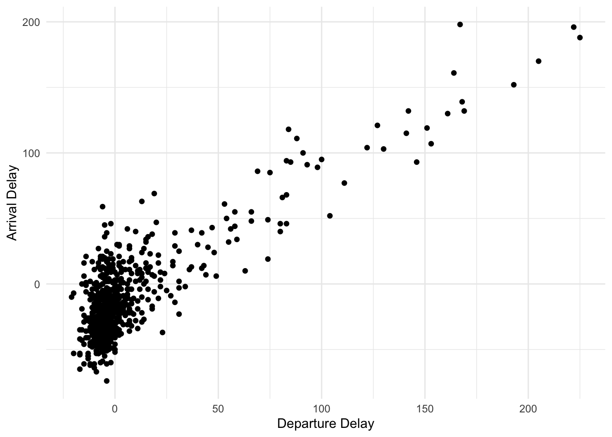
# Transparent dots
ggplot(data = alaska_flights, mapping = aes(x = dep_delay, y = arr_delay)) +
geom_point(alpha = .2) +
labs(x="Departure Delay", y="Arrival Delay") +
theme_minimal()Warning: Removed 5 rows containing missing values (`geom_point()`).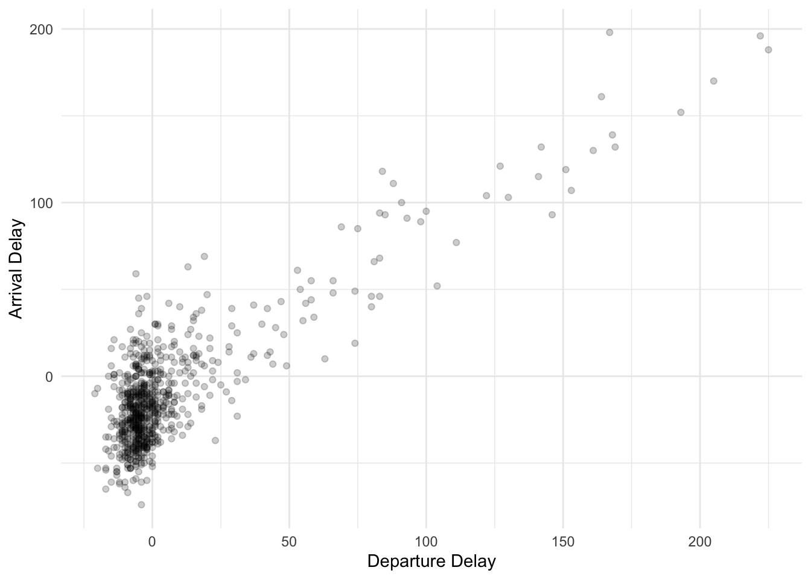
# Make dots smaller
ggplot(data = alaska_flights, mapping = aes(x = dep_delay, y = arr_delay)) +
geom_point(size=.5, alpha=.2) +
labs(x="Departure Delay", y="Arrival Delay") +
theme_minimal()Warning: Removed 5 rows containing missing values (`geom_point()`).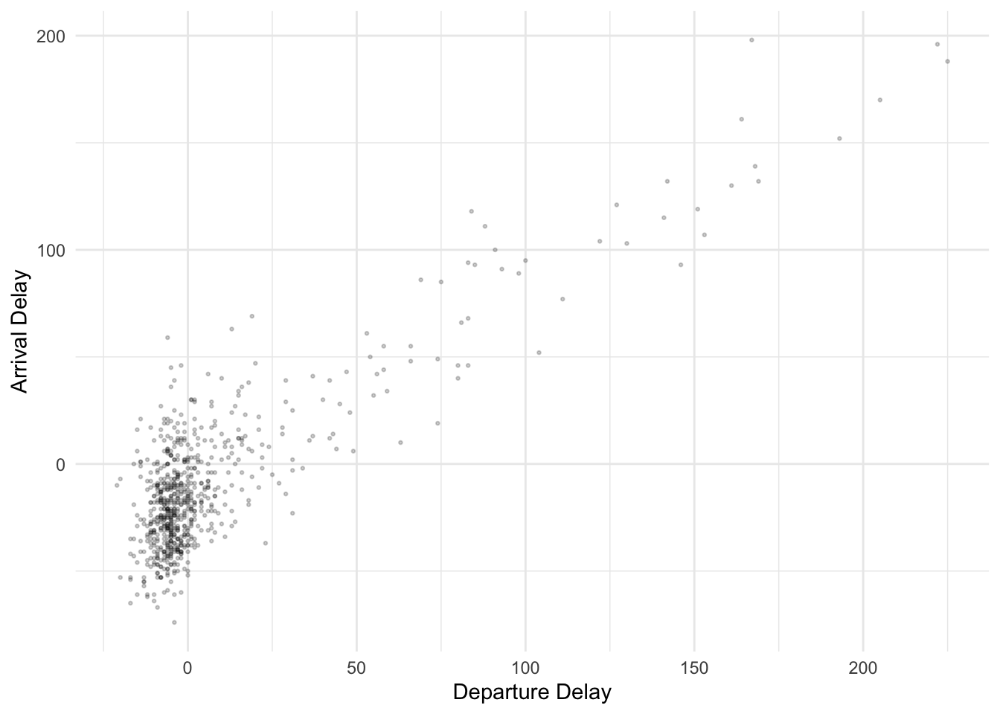
# "Jitter" the points -- good option if there are many overlaps
ggplot(data = alaska_flights, mapping = aes(x = dep_delay, y = arr_delay)) +
geom_jitter(width = 30, height = 30) +
labs(x="Departure Delay", y="Arrival Delay") +
theme_minimal()Warning: Removed 5 rows containing missing values (`geom_point()`).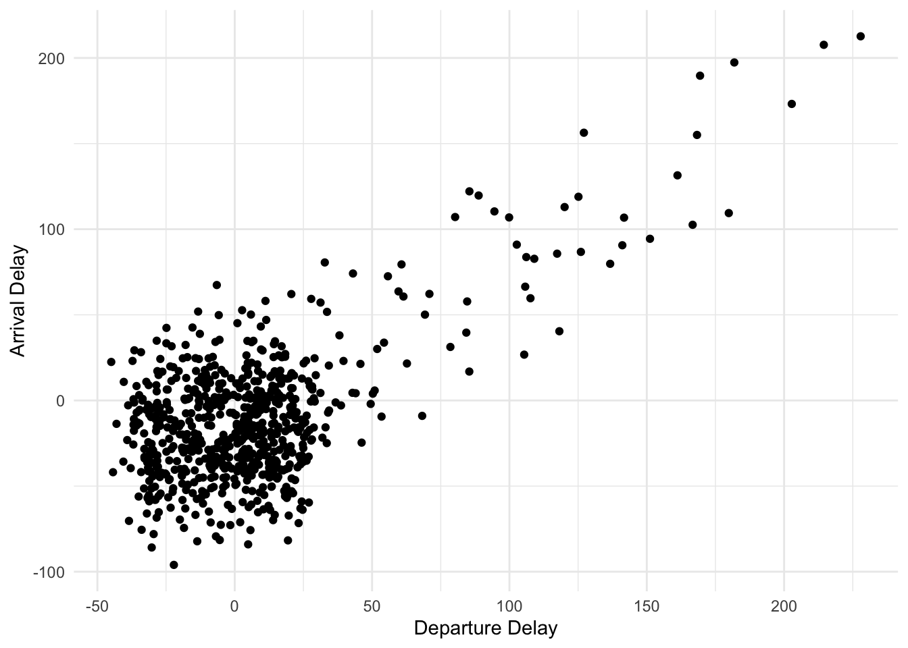
# Let's add a "line of best fit" to the plot
ggplot(data = alaska_flights, mapping = aes(x = dep_delay, y = arr_delay)) +
geom_point() +
geom_smooth(method="lm") +
labs(x="Departure Delay", y="Arrival Delay") +
theme_minimal()`geom_smooth()` using formula = 'y ~ x'Warning: Removed 5 rows containing non-finite values (`stat_smooth()`).
Removed 5 rows containing missing values (`geom_point()`).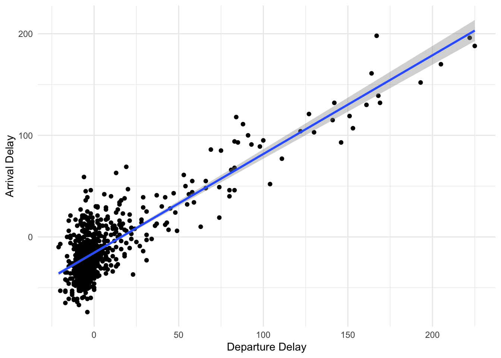
# Take out the confidence interval (shading around line)
ggplot(data = alaska_flights, mapping = aes(x = dep_delay, y = arr_delay)) +
geom_point() +
geom_smooth(method="lm", se=FALSE) +
labs(x="Departure Delay", y="Arrival Delay") +
theme_minimal()`geom_smooth()` using formula = 'y ~ x'Warning: Removed 5 rows containing non-finite values (`stat_smooth()`).
Removed 5 rows containing missing values (`geom_point()`).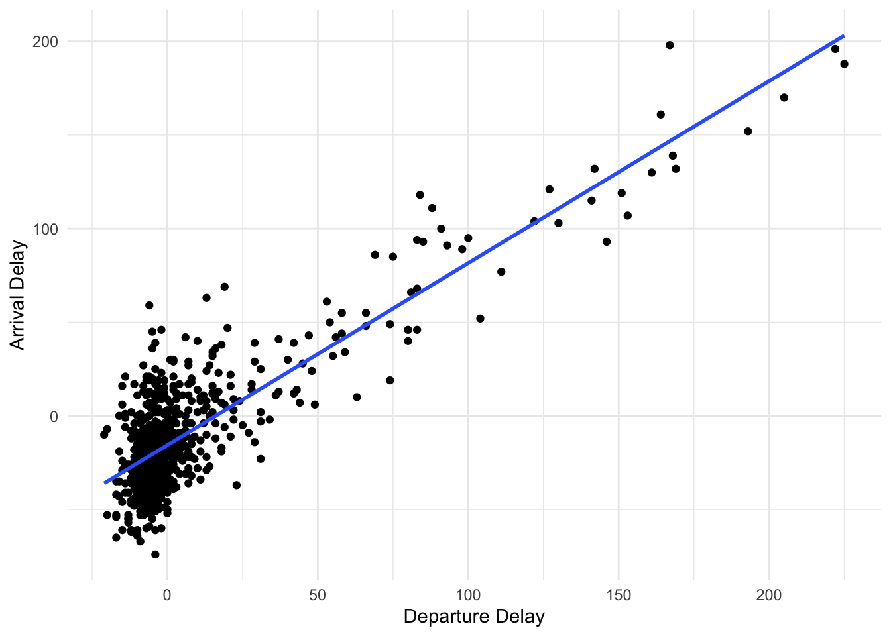
# Set limits and increments for y-axis labels
ggplot(data = alaska_flights, mapping = aes(x = dep_delay, y = arr_delay)) +
geom_point() +
geom_smooth(method="lm", se=FALSE) +
labs(x="Departure Delay", y="Arrival Delay") +
scale_y_continuous(limits = c(-100, 200), breaks = seq(-100, 200, by = 50)) +
theme_minimal()`geom_smooth()` using formula = 'y ~ x'Warning: Removed 5 rows containing non-finite values (`stat_smooth()`).
Removed 5 rows containing missing values (`geom_point()`).Warning: Removed 2 rows containing missing values (`geom_smooth()`).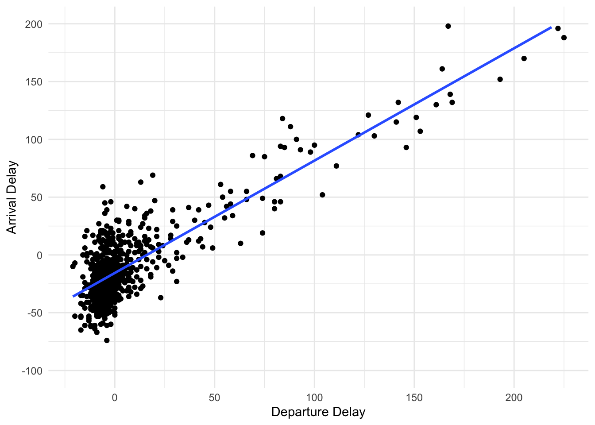
######################################################################################
################################## 2. Linegraphs ##################################
######################################################################################
# We'll use the "early_january_weather" data from moderndive package
#View(early_january_weather)
#?early_january_weather
# Let's plot temperatures ("temp") in Jan. against time ("time_hour")
# The geometry for a linegraph is "geom_line"
ggplot(data = early_january_weather, mapping = aes(x = time_hour, y = temp)) +
geom_line()
# We can also combine a linegraph and scatterplot
ggplot(data = early_january_weather, mapping = aes(x = time_hour, y = temp)) +
geom_line() +
geom_point()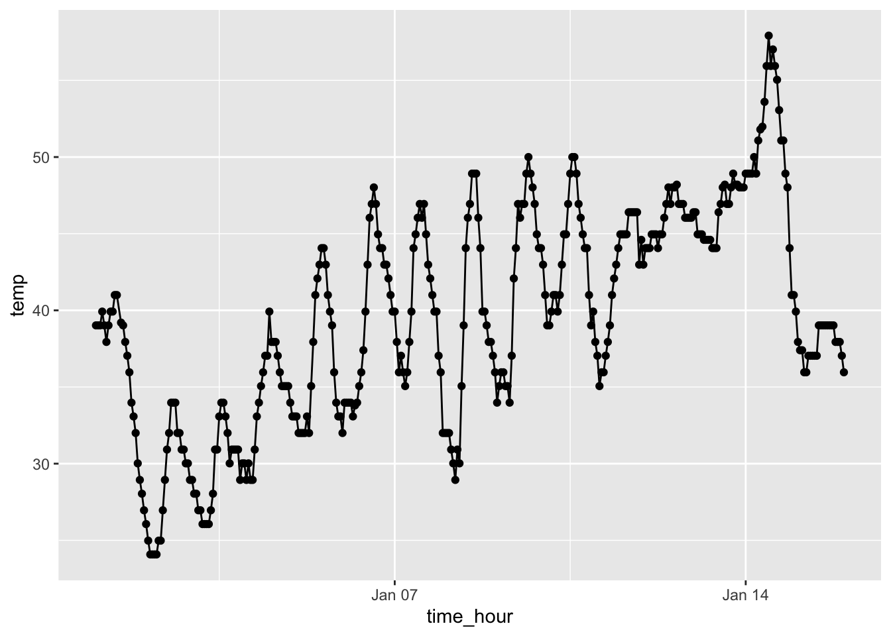
# One other cool graph is a "line smoother" to visualize the trend in a more effective way
ggplot(data = early_january_weather, mapping = aes(x = time_hour, y = temp)) +
geom_line() +
geom_smooth(se=FALSE)`geom_smooth()` using method = 'loess' and formula = 'y ~ x'
# We can change the limits on each axis; let's change the y axis
ggplot(data = early_january_weather, mapping = aes(x = time_hour, y = temp)) +
geom_line() +
geom_smooth(se=FALSE) +
ylim(0, 75) +
labs(x="Time/hour", y="Temperature")`geom_smooth()` using method = 'loess' and formula = 'y ~ x'# We can also set the limits and the increments we want on y-axis labels
ggplot(data = early_january_weather, mapping = aes(x = time_hour, y = temp)) +
geom_line() +
geom_smooth(se=FALSE) +
labs(x="Time/hour", y="Temperature") +
scale_y_continuous(limits = c(0, 75), breaks = seq(0, 75, by = 10))`geom_smooth()` using method = 'loess' and formula = 'y ~ x'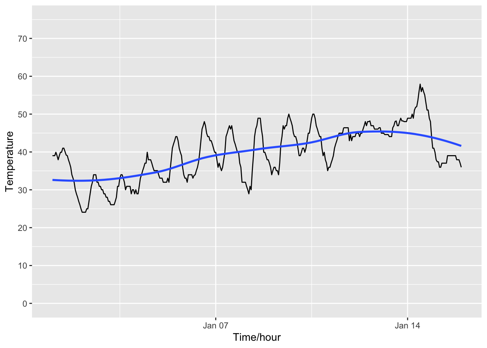
######################################################################################
################################## 3. Histograms ##################################
######################################################################################
# We'll use the "weather" data from nycflights13 package;
# Hourly meterological data for LGA, JFK and EWR.
# We want to visualize the distribution of a single variable with a histogram;
# these are ideal for "continuous" variables with lots of values.
#View(weather)
#?weather
# We'll focus on temperatures ("temp") at these three airports
# Note: geometry for a histogram is "geom_histogram"
ggplot(data = weather, mapping = aes(x = temp)) +
geom_histogram()`stat_bin()` using `bins = 30`. Pick better value with `binwidth`.Warning: Removed 1 rows containing non-finite values (`stat_bin()`).
# Too clumpy; let's delineate the bars some more. Always use color = "white" option.
ggplot(data = weather, mapping = aes(x = temp)) +
geom_histogram(color = "white")`stat_bin()` using `bins = 30`. Pick better value with `binwidth`.Warning: Removed 1 rows containing non-finite values (`stat_bin()`).
# We can also adjust the "bins" or the width of the bars; more or less fine-grained
ggplot(data = weather, mapping = aes(x = temp)) +
geom_histogram(bins = 40, color = "white")Warning: Removed 1 rows containing non-finite values (`stat_bin()`).
ggplot(data = weather, mapping = aes(x = temp)) +
geom_histogram(binwidth = 10, color = "white")Warning: Removed 1 rows containing non-finite values (`stat_bin()`).
# Why would want to do this?
# Facets! These are very cool for subsetting by some grouping
ggplot(data = weather, mapping = aes(x = temp)) +
geom_histogram(binwidth = 5, color = "white") +
facet_wrap(~ month)Warning: Removed 1 rows containing non-finite values (`stat_bin()`).
# We can also report y-axis in percentage terms; the third line uses
# the "scales" package
ggplot(data = weather, mapping = aes(x = temp)) +
geom_histogram(aes(y = (..count..)/sum(..count..)), bins = 30, color = "white") +
scale_y_continuous(labels=percent) +
labs(x="Temperature", y="Percentage of Hours")Warning: The dot-dot notation (`..count..`) was deprecated in ggplot2 3.4.0.
ℹ Please use `after_stat(count)` instead.Warning: Removed 1 rows containing non-finite values (`stat_bin()`).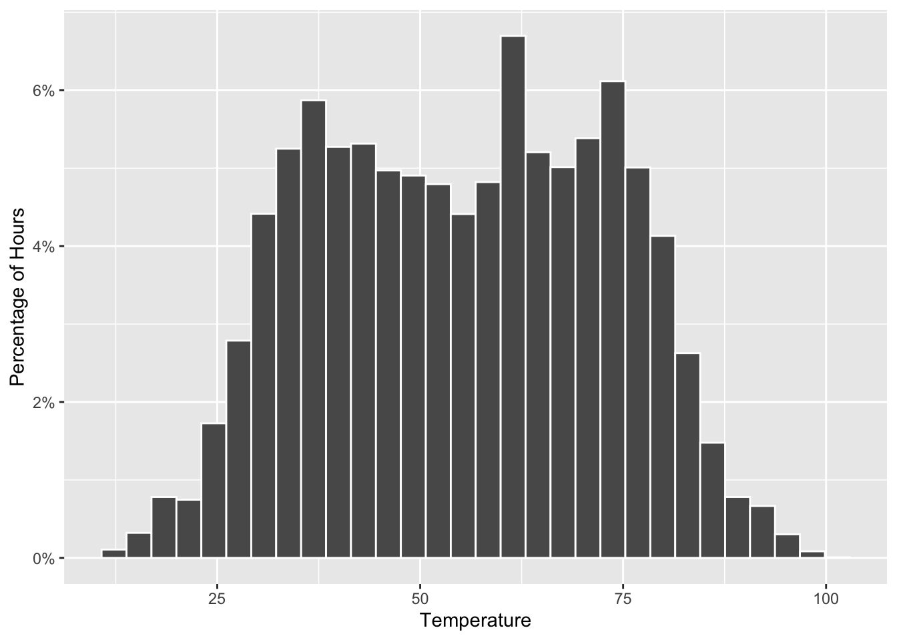
# Now change labeling for y-axis values
ggplot(data = weather, mapping = aes(x = temp)) +
geom_histogram(aes(y = (..count..)/sum(..count..)), bins = 40, color = "white") +
scale_y_continuous(limits = c(0, .06), breaks = seq(0, .06, by = .01), labels=percent) +
labs(x="Temperature", y="Percentage of Hours")Warning: Removed 1 rows containing non-finite values (`stat_bin()`).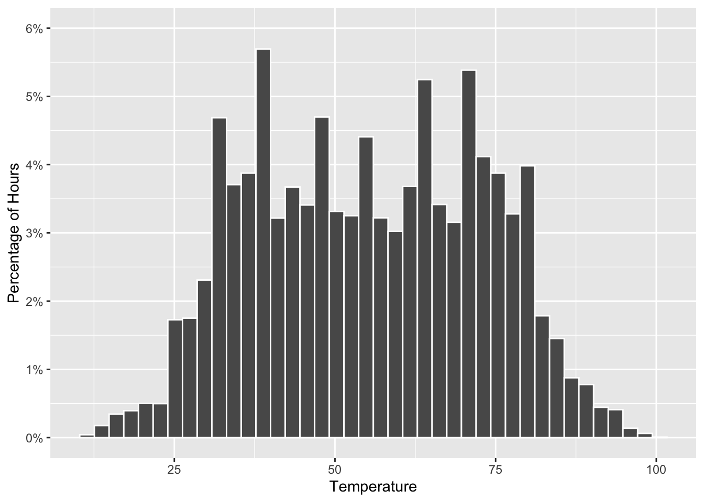
######################################################################################
################################## 4. Boxplots ##################################
######################################################################################
# Boxplots are another way to visualize the distribution of a single variable. These are
# again ideal for "continuous" variables with lots of values.
# What do boxplots give us exactly? "Low", 25th pctile, 50th pctile (median), 75th pctile,
# and "high"; and outliers.
# Let's again use the weather data: temperature
# Geometry for boxplot is "geom_boxplot"
ggplot(data = weather, mapping = aes(y = temp)) +
geom_boxplot()Warning: Removed 1 rows containing non-finite values (`stat_boxplot()`).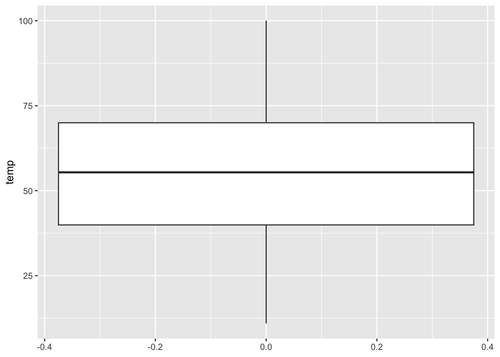
# Use more fine-grained y-axis labels
ggplot(data = weather, mapping = aes(y = temp)) +
geom_boxplot() +
scale_y_continuous(limits = c(0, 100), breaks = seq(0, 100, by = 5))Warning: Removed 3 rows containing non-finite values (`stat_boxplot()`).
# Generate this output using the "describe" command from polisci package:
describe(weather$temp)weather$temp
n missing distinct Info Mean Gmd .05 .10
26114 1 173 1 55.26 20.47 28.04 32.00
.25 .50 .75 .90 .95
39.92 55.40 69.98 78.80 82.40
lowest : 10.94 12.02 12.92 13.10 14.00, highest: 96.08 96.98 98.06 98.96 100.04# Now let's look at temp by month.
# We need to treat month as a "factor" or categorical variable instead of a continuous
# variable. We'll talk more about this distinction later in the class.
ggplot(data = weather, mapping = aes(x = factor(month), y = temp)) +
geom_boxplot() +
labs(x="Month", y="Temperature")Warning: Removed 1 rows containing non-finite values (`stat_boxplot()`).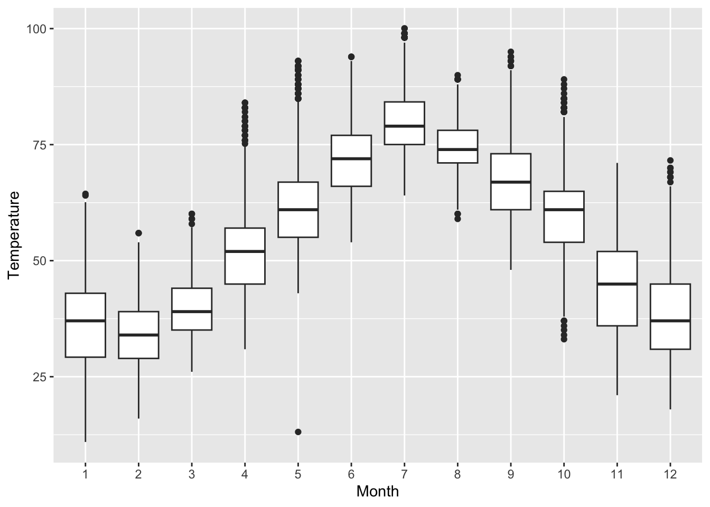
# Interpretation: "The 'whiskers' are set to extend out no more than 1.5 × IQR
# (75th minus 25th) units away from either end of the boxes. We say 'no more than'
# because the ends of the whiskers have to correspond to observed temperatures."
# Note that the dots outside the whiskers are "outliers."
######################################################################################
################################## 5. Barplots ##################################
######################################################################################
# Barplots are ideal for visualizing the spread of a "categorical" variable with few
# values. This is related to a frequency distribution.
# Let's use the flights data from nycflights13 to examine the frequency of flights by
# carrier.
# Let's use the "carrier" variable.
#?flights
#View(flights)
# We could get a frequency distribution in table form using the
# "freq" command from the poliscidata package.
freq(flights$carrier)
flights$carrier
Frequency Percent
9E 18460 5.481e+00
AA 32729 9.718e+00
AS 714 2.120e-01
B6 54635 1.622e+01
DL 48110 1.429e+01
EV 54173 1.609e+01
F9 685 2.034e-01
FL 3260 9.680e-01
HA 342 1.016e-01
MQ 26397 7.838e+00
OO 32 9.502e-03
UA 58665 1.742e+01
US 20536 6.098e+00
VX 5162 1.533e+00
WN 12275 3.645e+00
YV 601 1.785e-01
Total 336776 1.000e+02# Now ggplot; geometry for bar graph is "geom_bar"
ggplot(data = flights, mapping = aes(x = carrier)) +
geom_bar()
# Stacked bar graphs; let's say you wanted to break down by origin (EWR, JFK, or LGA)
ggplot(data = flights, mapping = aes(x = carrier, fill = origin)) +
geom_bar()
# Stacked bar graphs; let's say you wanted to break down by origin (EWR, JFK, or LGA)
ggplot(data = flights, mapping = aes(x = carrier, fill = origin)) +
geom_bar(position = "dodge")
# We could also facet wrap
ggplot(data = flights, mapping = aes(x = carrier)) +
geom_bar() +
facet_wrap(~ origin, ncol = 1)
# Note how y-axis is a count by default. Let's report as a proportion instead.
ggplot(data = flights, mapping = aes(x = carrier)) +
geom_bar(aes(y = (..count..)/sum(..count..)))# Report y-axis labels as percentage; the third line uses the package "scales", which
# converts the proportion to a percentage and adds a percent sign.
ggplot(data = flights, mapping = aes(x = carrier)) +
geom_bar(aes(y = (..count..)/sum(..count..))) +
scale_y_continuous(labels=percent) 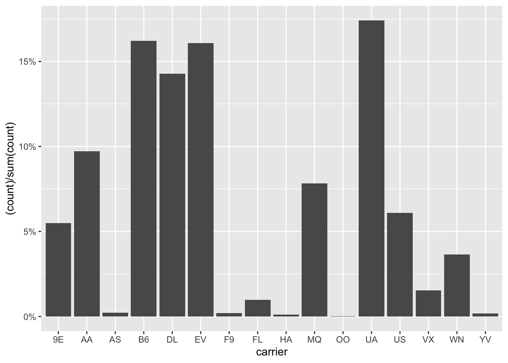
# Report y-axis labels as percentage; the third line uses the package "scales"; label axes
ggplot(data = flights, mapping = aes(x = carrier)) +
geom_bar(aes(y = (..count..)/sum(..count..))) +
scale_y_continuous(labels=percent) +
labs(x="Carrier", y="Percentage")########### NOTE ON SYNTAX ###############
# There are some aspects of the syntax used above that are unnecessary and that we can
# eliminate. For example:
# This command:
ggplot(data = flights, mapping = aes(x = carrier)) +
geom_bar()
# is identical to this commmand (note that I've removed "data=" and "mapping="):
ggplot(flights, aes(x = carrier)) +
geom_bar()
# From now on, we'll simplify to the second command
############################## DATA WRANGLING (Ch. 3) ##############################
# All data wrangling tools in Ch. 3 are from the package "dplyer," which is loaded
# when you load the "tidyverse" package.
############################# 1. The Pipe Operator, %>% #############################
# Allows you to link different aspects of code. "First, I'll do this, THEN I'll do that,
# THEN I'll do this."
# Example
# This command:
ggplot(flights, aes(x = carrier)) +
geom_bar()
# is identical to this command:
flights %>%
ggplot(aes(x = carrier)) +
geom_bar()
# Note the difference. "Use this data, flights, THEN produce a bar graph.
########################## 2. Filter: Select subset of observations ######################
# Let's use the "states" data that you'll use in Assignment 1
st <- read_dta("states.dta")
# Note that you can list all the variables in the dataset by running:
ls(st) [1] "Abort_rank3" "abort_rate05"
[3] "abort_rate08" "Abortion_rank12"
[5] "abortlaw10" "abortlaw2017"
[7] "abortlaw3" "Adv_or_more"
[9] "alcohol" "attend_pct"
[11] "BA_or_more" "ba_or_more_2015"
[13] "battle04" "biz_tax_rank"
[15] "biz_tax_score" "black_legis_2015"
[17] "blackpct_2016" "blkleg"
[19] "blkpct04" "blkpct08"
[21] "blkpct10" "bush00"
[23] "bush04" "carfatal"
[25] "carfatal07" "cig_tax"
[27] "cig_tax_3" "Cig_tax12"
[29] "Cig_tax12_3" "cigarettes"
[31] "citizen_ideology" "clinton16"
[33] "clinton16_ev" "college"
[35] "conpct_m" "cons_hr06"
[37] "cons_hr09" "Conserv_advantage"
[39] "Conserv_public" "cook_index"
[41] "cook_index3" "corrections_incarc_rate"
[43] "corrections_total_rate" "crime_rate_burglary"
[45] "crime_rate_murder" "crime_rate_property"
[47] "crime_rate_violent" "deathpen_executions"
[49] "deathpen_exonerations" "defexpen"
[51] "Dem_advantage" "dem_hr09"
[53] "demHR11" "demnat06"
[55] "dempct_m" "demstate_2017"
[57] "demstate06" "demstate09"
[59] "demstate13" "density"
[61] "division" "drug_death_rate"
[63] "earmarks_pcap" "evm"
[65] "evo" "evo2012"
[67] "evr2012" "gay_policy"
[69] "gay_policy_con" "gay_policy2"
[71] "gay_support" "gay_support3"
[73] "gb_win00" "gb_win04"
[75] "gini_2016" "gini_rank_2016"
[77] "gore00" "Govt_worker"
[79] "gun_check" "gun_dealer"
[81] "gun_murder10" "gun_rank_rev"
[83] "Gun_rank11" "gun_rank2015"
[85] "Gun_rank3" "Gun_scale11"
[87] "gunlaw_rank" "gunlaw_rank3_rev"
[89] "gunlaw_scale" "gunlaw_scale2015"
[91] "hispanic_legis_2015" "hispanic04"
[93] "hispanic08" "hispanic10"
[95] "hispanicpct_2016" "HR_cons_rank11"
[97] "HR_conserv11" "HR_lib_rank11"
[99] "HR_liberal11" "HS_or_more"
[101] "hs_or_more_2015" "hs_yrs_ss"
[103] "indpct_m" "infant_mortality"
[105] "judge_selection" "kerry04"
[107] "legalclimate" "legalclimate_rank"
[109] "legis_prof_rank" "legis_prof_score"
[111] "lgbtq_equality_laws" "libpct_m"
[113] "mccain08" "medicaid_expansion"
[115] "min_wage" "modpct_m"
[117] "nader00" "obama_win08"
[119] "Obama_win12" "obama08"
[121] "Obama2012" "obesity_percent"
[123] "opioid_rx_rate" "over64"
[125] "over64_2016" "permit"
[127] "polarization_house" "polarization_senate"
[129] "policy_innovation_rate" "pop_18_24"
[131] "pop_18_24_10" "Pop2000"
[133] "Pop2010" "Pop2010_hun_thou"
[135] "pop2016" "Popchng0010"
[137] "PopchngPct" "Pot_policy"
[139] "pot_policy2017" "prcapinc"
[141] "preg_teen_rate" "preg_uninten_rate"
[143] "ProChoice" "prochoice_percent"
[145] "ProLife" "reg"
[147] "Relig_Cath" "Relig_high"
[149] "relig_import" "relig_import_2016"
[151] "Relig_low" "Relig_Prot"
[153] "religiosity" "Religiosity3"
[155] "reppct_m" "Romney2012"
[157] "rtw" "schools_avg_salary"
[159] "schools_spend" "schools_st_ratio"
[161] "secularism" "secularism3"
[163] "seniority_sen2" "Smokers12"
[165] "south" "state"
[167] "state_govt_rank" "StateID"
[169] "suicide_rate" "term_limits"
[171] "to_0004" "to_0408"
[173] "TO_0812" "trnout00"
[175] "trnout04" "trump16"
[177] "trump16_ev" "unemploy"
[179] "unemploy2016" "Uninsured_pct"
[181] "uninsured_pct_2015" "union_2016"
[183] "union04" "union07"
[185] "union10" "urban"
[187] "vep00_turnout" "vep04_turnout"
[189] "vep08_turnout" "vep12_turnout"
[191] "vep14_turnout" "vep16_turnout"
[193] "volunteer_hrs_pc" "volunteer_rate"
[195] "voter_id_law" "whitepct_2016"
[197] "womleg_2007" "womleg_2010"
[199] "womleg_2011" "womleg_2017" # Let's say we wanted to create two separate datasets: One for Southern states and
# one for non-Southern states. We can use the "filter" command
# First, let's see how "south" is coded; note 1=South, 0=non-South
freq(st$south)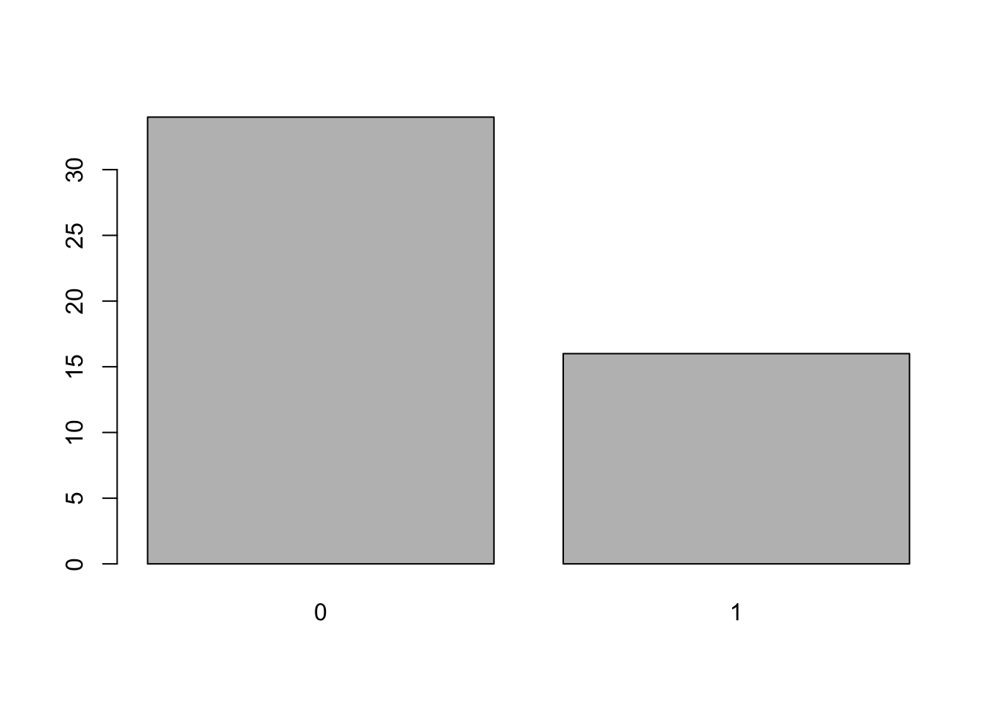
Southern state?
Frequency Percent
0 34 68
1 16 32
Total 50 100# Create new data object for Southern states; note how we use the pipe operator
south <- st %>%
filter(south==1)
# Non-South
nonsouth <- st %>%
filter(south==0)
# Now we can describe voter turnout for Southern and non-Southern states
nonsouth %>%
ggplot(aes(y=vep16_turnout)) +
geom_boxplot() +
ylim(40,80)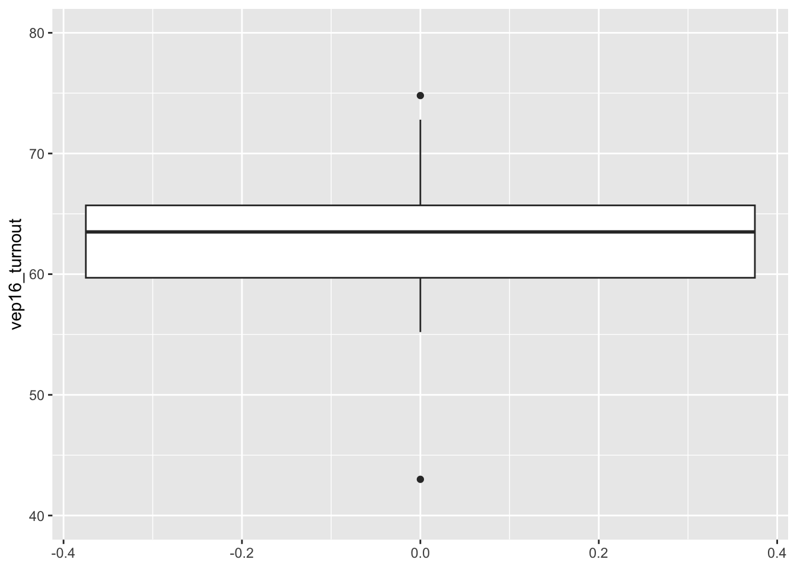
south %>%
ggplot(aes(y=vep16_turnout)) +
geom_boxplot() +
ylim(40,80)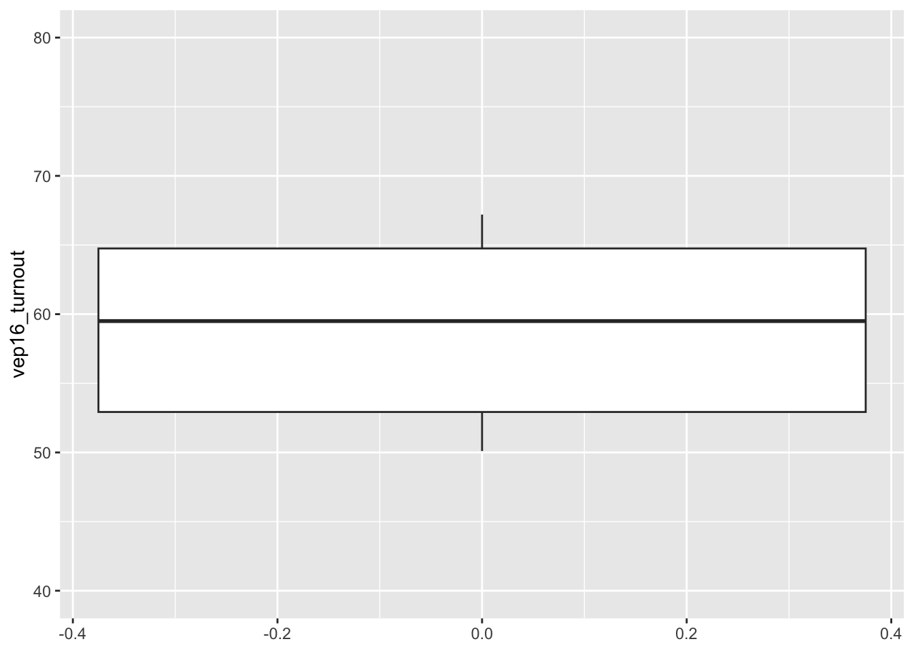
# Or, use original states data; check out labels
st %>%
ggplot(aes(x=factor(south), y=vep16_turnout)) +
geom_boxplot() +
ylim(40,80) +
labs(x="non-South v. South", y="Voter Turnout 2016") +
scale_x_discrete(labels=c("non-South", "South"))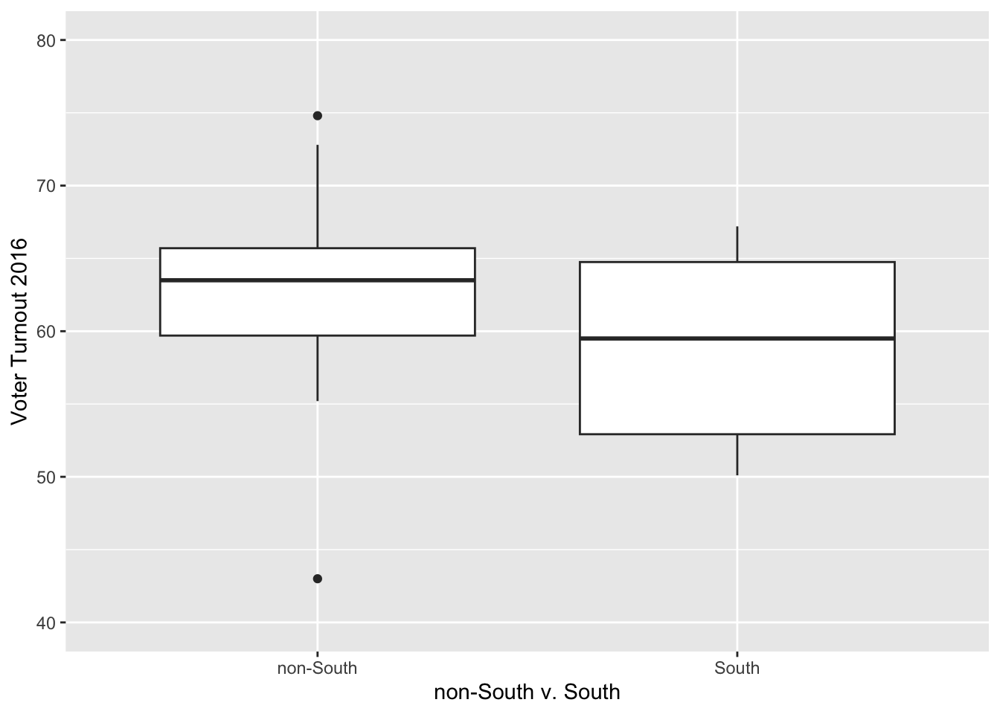
# One huge value of the pipe is that we actually would not need to create the two
# new data objects for South and non-South. We can integrate "subsetting" with the
# the graphing or data command we want to execute.
# This:
south %>%
ggplot(aes(y=vep16_turnout)) +
geom_boxplot() +
ylim(40,80)
# generates the exact same graph as this:
st %>%
filter(south==1) %>%
ggplot(aes(y=vep16_turnout)) +
geom_boxplot() +
ylim(40,80)
########################## 2. Summarize ######################
# We can use this command to generate summary statistics, like mean, median, standard
# deviation, etc.
st %>%
summarize(mean = mean(vep16_turnout), std_dev = sd(vep16_turnout))# A tibble: 1 × 2
mean std_dev
<dbl> <dbl>
1 61.7 6.38# We could also save this information as an object, called a "tibble."
stats <- st %>%
summarize(mean = mean(vep16_turnout), std_dev = sd(vep16_turnout))
# Type "stats" to see output
stats# A tibble: 1 × 2
mean std_dev
<dbl> <dbl>
1 61.7 6.38# We can also combine filter and summarize; let's use South and non-South example
st %>%
filter(south==1) %>%
summarize(mean = mean(vep16_turnout), std_dev = sd(vep16_turnout))# A tibble: 1 × 2
mean std_dev
<dbl> <dbl>
1 58.7 5.90st %>%
filter(south==0) %>%
summarize(mean = mean(vep16_turnout), std_dev = sd(vep16_turnout))# A tibble: 1 × 2
mean std_dev
<dbl> <dbl>
1 63.0 6.20########################## 3. Group by ######################
# This groups observations by variable values and executes commands for each group
# Let's get avg. turnout for each of four regions in the U.S., using the "reg" variable
# 1=NE, 2=MW, 3=South, 4=West
region <- st %>%
group_by(reg) %>%
summarize(mean = mean(vep16_turnout), std_dev = sd(vep16_turnout))
# See output
#region
# Graph it
region %>%
ggplot(aes(x=factor(reg), y=mean)) +
geom_col() +
labs(x="Region", y="Percent Turnout") +
scale_x_discrete(labels=c("NE", "MW", "South", "West"))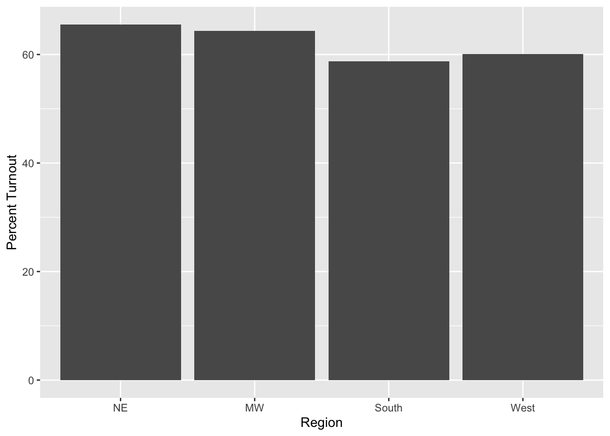
########################## 4. Select: subset variables ######################
# Let's say we're working with the states data, but we want to subset JUST the variables
# that we're analyzing. From Assignment 1, we use "vep16_turnout" and "ba_or_more_2015."
# Let's use "state" and "StateID" as well.
st_reduced <- st %>%
select(state, StateID, vep16_turnout, ba_or_more_2015)
# You can also rename variables; be cautious about this
st_reduced <- st %>%
select(state, StateID, vep16_turnout, ba_or_more_2015) %>%
rename(turnout=vep16_turnout, ba=ba_or_more_2015)